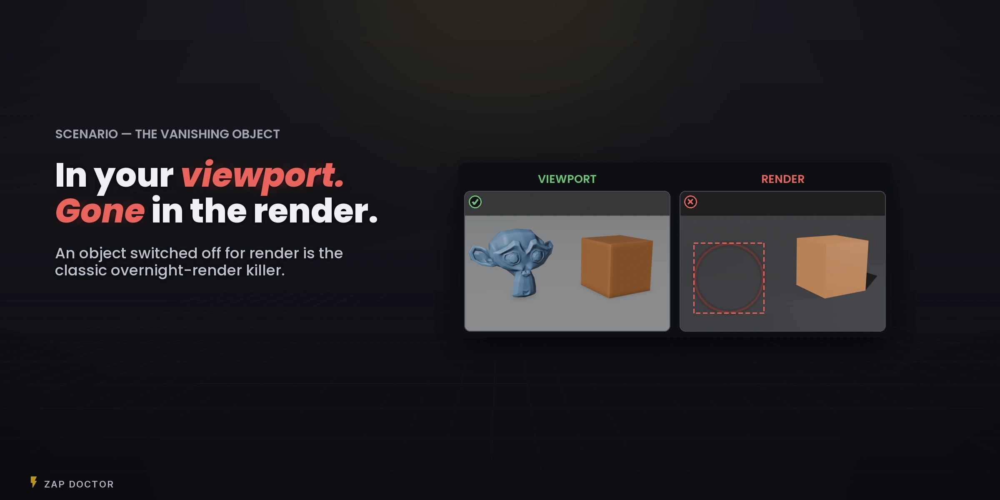
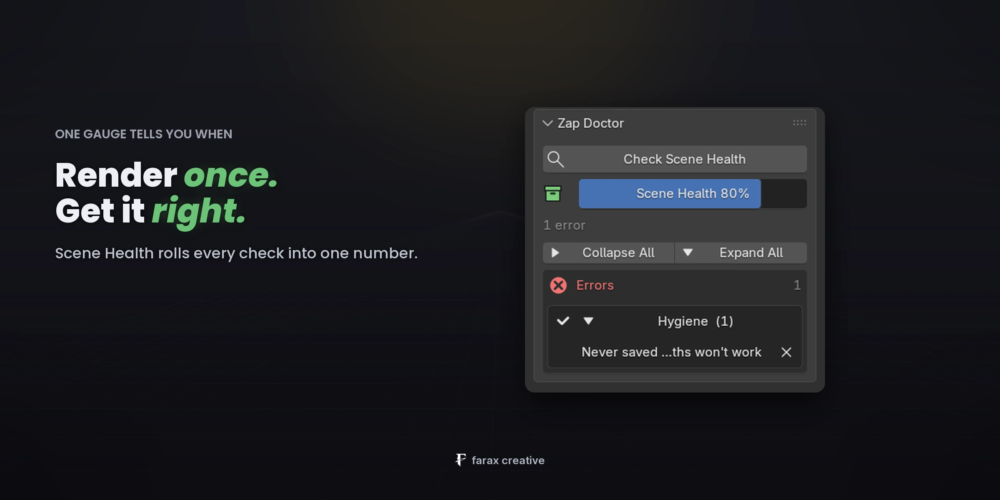
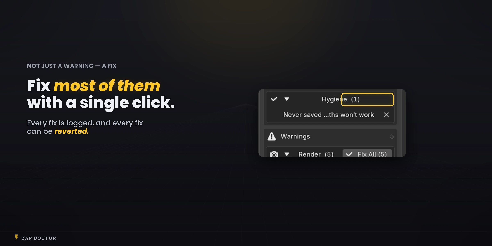
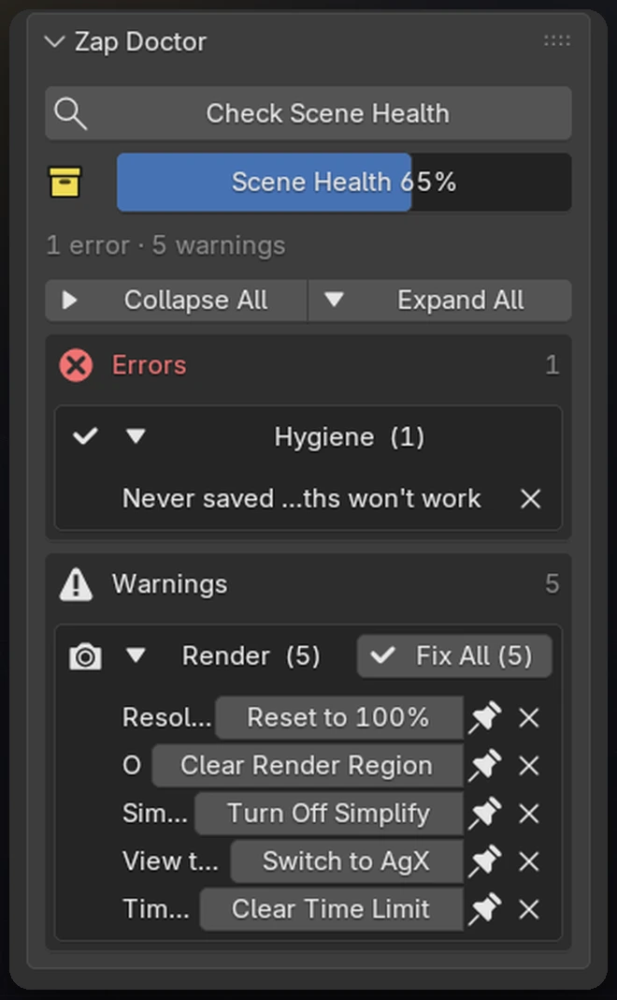

Zap Doctor scans your scene for the classic overnight-render killers and fixes most of them in one click.

The render finishes overnight. One object was switched off for render, a texture was missing, a render region was left on. Hours gone, and nothing warned you.
Press Check Scene Health before you render. Zap Doctor rolls every check into one number and lists what is wrong, grouped by severity.

Everything happens in the panel. Every fix is logged, and every fix can be reverted.

Scroll the results. Errors, warnings and suggestions, grouped.
Fix issues one after another. The score climbs as rows clear.
Revert puts every applied fix back, and the issues return.
The mistakes that cost a render, in the order you usually meet them.

Missing or read-only folder, frames that would be overwritten, animation sent to a video file, not enough disk space.
Visible in the viewport but off for render, no active camera, unbaked simulations, no light.
Render region left on, resolution under 100%, Simplify on, Cycles on CPU with a GPU set up, Raw view transform.
Missing image textures, broken linked libraries, empty image files.
A file that was never saved, orphan data, unused material slots.
A preflight tool should not add its own surprises to a farm or a long render.
By default it scans only when you press the button. Render Guard, off by default, is the one automatic check, and you turn it on yourself.
Recently Fixed shows what changed in one line, with a Revert button where the change can be undone automatically.
A modifier off in the viewport and on for render is often deliberate, so that row hands you the real toggles instead.
No network access. Report a Bug only opens your browser with your versions filled in.
Version 1.3 brings the count from 30 to 34 and adds an optional guard at the moment you render.
Off by default. When it is on, a short prompt lists what would spoil the render, and you choose Fix & Render or Render Anyway.
It reports. It can’t stop a render that is already running, and Blender gives an add-on no way to. The decision stays yours.
No Free and Pro split. All 34 checks and every fix, as a perpetual licence with free updates.
Tested on 4.3, 4.4, 4.5, 5.1 and 5.2.
Cycles and EEVEE. No platform-specific setup.
Drag the zip onto Blender. No sign-in, no key to paste.
No. By default it scans only when you press the button, with no network access at all. Render Guard, off by default, is the one thing that adds an automatic scan, and you turn it on yourself.
It stops you before the render starts, by showing what would go wrong. Once a render has begun, Blender gives an add-on no way to abort it, so we don’t claim to. Renders started from the menu or the command line go around the shortcut.
Scan time follows how many textures you reference and where they live, not the object count. A big scene with local textures is quick.
Catch the render-ruining mistakes before you hit F12, and fix most of them in one click.
See what is new in 1.3 →